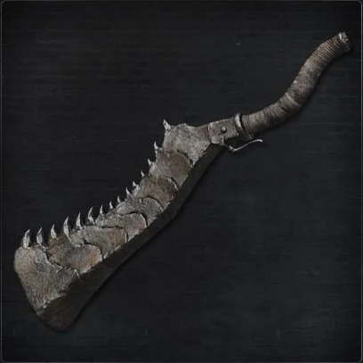
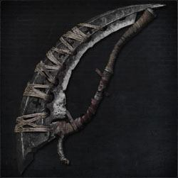
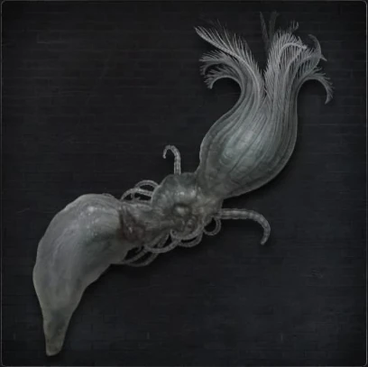
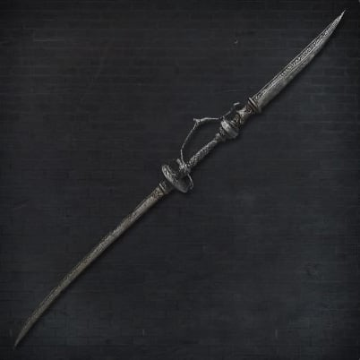
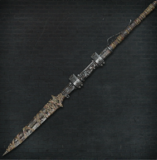

Melee Weapons |
There are a total of 26 Weapons giving vareity to how Hunters slay the beasts of the night. *Each weapon has 2 forms*
Item Name |
Description |
 |
Amygdalan Arm |
The arm of a small Amygdala Great One.
Strictly speaking, the Amygdalan Arm is no trick weapon of any sort, but certain madmen
wield them like clubs.
Starts as a large, tough blunt weapon formed of bone, but when extended, the hand
quivers as if it were still alive.
|
 |
Beast Claw |
Beastly weapon wielded by Irreverent Izzy.
Crafted by chiseling the long bones of an undead darkbeast and fastening them to the
weapon. The bones are still alive, and when unleashed, grant its wielder a spurt of
beastly power.
As flesh is flayed and blood is sprayed, the beast within awakens, and in time, the
wielder of this weapon surges with both strength and feverish reverie."
|
|  |
Beast Cutter |
A trick weapon used by Old Hunters.
This thick iron cleaver slices through the toughest of beast hides, and when transformed
the blade splits into sections, allowing one to lash it in the fashion of a heavy
whip.
This crude weapon relies on brute force and is regrettably inelegant, suggesting that
the hunts of the earliest hunters made for horrific affairs, painted in sanguine black
and reds."
|
|  |
Beasthunter Saif |
A trick weapon used by the old hunters.
A second blade is found inside the curve of the main one. In its initial form, the
saif can be wielded like a long curved sword, but when transformed, its blade is contracted,
allowing for quick, repeated stabs.
Although this trick weapon allows for adaptive combat, it was later replaced by saws
and similar weapons that were more effective at disposing of beasts."
|
 |
Blade of mercy |
A special trick weapon passed down among hunters of hunters. One of the oldest weapons
of the workshop.
Splits into two when activated. The weapon's warped blades are forged with siderite,
a rare mineral of the heavens. Most effective swift attacks,such as after a quick-stepping."
|
 |
Bloodletter |
The demented hunter weapon brandished by Brador, the Healing Church assassin.
The Bloodletter assumes its true and terrifying form after it draws upon blood from
the inner reaches of one's body and soul.
This is the only effective means of expelling tainted blood, or so Brador, isolated
in his cell, continued to believe."
|
 |
Boom Hammer |
A trick weapon used by the old hunters, and crafted by the workshop heretics, the
Powder Kegs.
A giant hammer equipped with a miniature furnace. When ignited and fired, it emits
a volley of flame that explodes furiously upon impact.
Crush the beasts, then burn them - the brute simplicity of the Boom Hammer was favored
by hunters with an acute distaste for beasts."
|
 |
Burial Blade |
Trick weapon wielded by Gehrman, the first hunter."
A masterpiece that defined the entire array of weapons crafted at the workshop. Its
blade is forged with siderite, said to have fallen from the heavens.
Gehrman surely saw the hunt as a dirge of farewell, wishing only that his prey might
rest in peace, never again to awaken to another harrowing nightmare. "
|
 |
Chikage |
Foreign-made weapon wielded by the royal guards who protect Annalise, Queen of the
Vilebloods at Cainhurst Castle.
When the intricate, rippled engraving that spans the Chikage's blade is imbrued with
blood, the sword sings in scarlet hues.
However, the rite eats away at the wielder's very essence."
|
 |
Church Pike |
One of the old trick weapons of the Healing Church, a hunting weapon formed from one
of the giant picks that appear in old beast tales.
The Church Pick initially serves as a large sword, but when transformed functions
as an extended war pick. In spite of its origins, it is a highly practical weapon."
|
 |
Holy Moonlight Sword |
An arcane sword discovered long ago by Ludwig.
When blue moonlight dances around the sword, and it channels the abyssal cosmos, its
great blade will hurl a shadowy lightwave.
The Holy Moonlight Sword is synonymous with Ludwig, the Holy Blade, but few have ever
set eyes on the great blade, and whatever guidance it has to offer, it seems to be
of a very private, elusive sort."
|
 |
Hunter Axe |
One of the trick weapons of the workshop, commonly used on the hunt. Retains the qualities
of an axe, but offers a wider palette of attacks by transforming. Boasts a heavy blunt
attack, leading to high rally potential. No matter their pasts, beasts are no more
than beasts. Some choose this axe to play the part of executioner."
|
 |
Kirkhammer |
A trick weapon typically used by Healing Church hunters. On the one side, an easily
handled silver sword. On the other, a giant obtuse stone weapon, characterized by
a blunt strike and extreme force of impact. The Church takes a heavy-handed, merciless
stance toward the plague of beasts, an irony not lost upon the wielders of this most
symbolic weapon."
|
|  |
Kos Parasite |
When the carcass of Kos washed up on the coast, its insides were teeming with tiny
parasites, unlike any found in humans.
This atypical weapon can only be clasped tight and swung, but a Kos Parasite is said
to stimulate phantasms inhabiting a lumenwood"
|
 |
Logarius's Wheel |
"Weapon wielded by martyr Logarius' band of executioners.
Used to slaughter the Vilebloods in Cainhurst. Bathed in pools of their blood, and
forever steeped in their ire.
Transform to release the power of the wheel and manifest their lingering rage in a
show of utter brilliance."
|
 |
Ludwig's Holy Blade |
A trick weapon typically used by Healing Church hunters. It is said that the silver
sword was employed by Ludwig, the first hunter of the church. When transformed, it
combines with its sheath to form a greatsword.
It exhibits several departures from the workshop's design, suggesting that the Church
anticipated much larger inhuman beasts."
|
|  |
Rakuyo |
Hunter weapon wielded by Lady Maria of the Astral Clocktower.
A trick sword originated in the same country as the Cainhurst Chikage, only this sword
feeds not off blood, but instead demands great dexterity.
Lady Maria was fond of this aspect of the Rakuyo, as she frowned upon blood blades,
despite being a distant relative of the queen.
One day, she abandoned her beloved Rakuyo, casting it into a dark well, when she could
stomach it no longer."
|
 |
Reiterpallasch |
Weapon wielded by the Knights of Cainhurst.
Combines an elegant knight's sword with the peculiar firearm wielded by the Cainhurst
order.
The old nobles, long-time imbibers of blood, are no strangers to the sanguine plague,
and the disposal of beasts was a discrete task left to their servants, or knights,
as they were called for the sake of appearances."
|
|  |
Rifle Spear |
A trick weapon crafted by the workshop heretics, the Powder Kegs. A prototype weapon
serving as a simple firearm and spear, possibly created in imitation of a lost Cainhurst
weapon. Lacks any notable functions, saving that it is the only trick weapon with
an attached gun. "
|
 |
Saw Cleaver |
One of the trick weapons of the workshop, commonly used in the hunting business.
This saw, effective at drawing the blood of beasts, transforms into a long cleaver
that makes use of centrifugal force.
The saw, with its set of blood-letting teeth, has become a symbol of the hunt, and
only grows in effectiveness the more grotesquely transformed the beast."
|
 |
Saw Spear |
One of the trick weapons of the workshop, commonly used by those who dedicate themselves
to the hunt. This saw, effective at drawing the blood of beasts, transforms into a
medium-range spear. The saw, with its set of blood-letting teeth, has become a symbol
of the hunt, and only grows in effectiveness the more grotesquely transformed the
beast."
|
 |
Simon's Bowblade |
Choice weapon of Simon, one of the first Healing Church hunters.
Simon despised firearms, and so the Church workshop had this specially fashioned to
his liking. The large curved blade serves as a bow when transformed.
But aside from a few close friends, Simon was scoffed at for his choice of arms, for
who would dare face the beasts with a measly bow?"
|
 |
Stake Driver |
A trick weapon fashioned by the workshop heretics, the Powder Kegs. Favored by the
retired hunter Djura.
The stake driver, with its queerly complex design, violently drives thick stakes into
the flesh of foes.
The stake driver allows for high-damage critical attacks, but is difficult to use
and leaves its wielder wide open, but none of this should bother a mere Powder Keg."
|
 |
Threaded Cane |
One of the trick weapons of the workshop, commonly used by hunters on their duties.
Sufficiently deadly as a rigid bladed cane, but also serves as a whip when its blade
is split into many. Concealing the weapon inside the cane and flogging the beasts
with the whip is partly an act of ceremony, an attempt to demonstrate to oneself that
the bloodlust of the hunt will never encroach upon the soul."
|
 |
Tonitrus |
"A unique trick weapon contrived by Archibald, the infamous eccentric of the Healing
Church workshop.
Striking this peculiar iron morning star flail like a match generates the same blue
sparks that blanket a darkbeast.
Unfortunately, for reasons untold, the hunters of Archibald's time did not fully take
to the device."
|
 |
Whirligig Saw |
A trick weapon crafted by the workshop heretics, the Powder Kegs, and weapon of choice
of the Old Hunter Valtr, the Beast Eater.
This weapon pummels beasts in its mace form, but its true strength lies in its attached
mechanical saws.
These discs, lined with serrated teeth,spin rapidly, thrashing the flesh of beasts
into fine shreds."
|
Firearms |
There are a total of 16 Firearms giving range capabilities to Hunters in the night.
Item Name |
Description |
 |
Cannon |
Large prototype firearms fashioned by the workshop heretics, the Powder Kegs. Use
of this weapon is equivalent to toting a mounted cannon, complete with its ridiculous
weight, staggering kick, and lavish use of Quicksilver Bullets, into battle. Such
a monstrosity was doomed from the start, and indeed its development was cut short.
Yet, against impossibly gigantic foes, it might be just the thing. "
|
|
Church Cannon |
An oversized weapon used by the Healing Church. A type of cannon that fires with a
curved trajectory and creates an explosion upon impact.
Originally designed for use by brawny men with deteriorated brains, not for just any
ordinary hunter.
But the men lacked the wits to effectively operate firearms, and the weapon was quietly
ushered into permanent storage."
|
 |
Evelyn |
Special pistol used by Cainhurst knights.
The Evelyn uses Quicksilver Bullets, just as any workshop firearm, but the Cainhurst
variant relies more on bloodtinge.
Lovingly named after a woman and graced with an intricate design, Evelyns were adored
by Cainhurst knights."
|
 |
Fist of Gratia |
A chunk of iron fitted with finger holes
The hulking hunter woman Simple Gratia, ever hopeless when handling hunter firearms,
preferred to knock the lights out of beasts with this hunk of iron, which incidentally
caused heavy stagger.
Gratia was a fearsome hunter, and to onlookers, her unrelenting pummelling appeared
oddly heroic. No wonder this weapon later assumed her name."
|
 |
Flamesprayer |
A special weapon used by certain members of the Healing Church.
Spits searing flames by using blood-imbued Quicksilver Bullets as a special medium.
Not the most efficient weapon by any stretch, but sometimes a sea of flame is just
what the doctor ordered.
Besides, the beasts of Yharnam can always use a good cleansing."
|
 |
Gatling Gun |
This is a highly-customised, portable version of the stationary gatling gun operated
by the old hunter Djura in Old Yharnam.
It was the weapon of choice of the youngest of Djura's three companions.
The Gatling Gun boasts exceptional rapid-firing functionality, but is considered a
cumbersome weapon, due to its excessive weight and insatiable consumption of Quicksilver
Bullets."
|
|
Hunter Blunderbuss |
A blunderbuss created at the workshop for the hunters' line of work. Hunter firearms
are specially crafted to employ Quicksilver Bullets fused with the wielder's own blood,
boosting damage against beasts. The impact of this highly-effective weapon counters
beasts' swift movements, and its wide spread is nigh-on guaranteed to hit the mark."
|
 |
Hunter Pistol |
Pistol made at the workshop, for hunters stalking beasts. Hunter firearms are specially
crafted to employ Quicksilver Bullets fused with the wielder's own blood, boosting
damage against beasts. The pistol is a quicker draw than the blunderbuss, allowing
for speedier responses to attacks."
|
 |
Hunter's Torch |
A torch formed by the wrapping a pine resin cloth around the end of a long stick,
once used in Old Yharnam. Designed to incinerate beasts and victims touched by the
scourge.
Its fire damage is highly effective against beasts."
|
|
Loch Shield |
An artisanal shield crafted with blue glass.
Originally used to safeguard the leader presiding over a sacred Healing Church ceremony,
and later supplied to tomb prospectors, in particular those exploring the labyrinth
of Isz.
The blue is fashioned after a lake, and the shield greatly reduces all forms of non-physical
damage. "
|
 |
Ludwig's Rifle |
A rifle typically used by Healing Church hunters.
It is said that this rifle was employed by Ludwig, the first hunter of the Church.
Its long, heavy barrel makes up in range for what it lacks in reload speed.
Ludwig's Rifle exhibits several departures from the workshop's design, suggesting
that the Church anticipated much larger inhuman beasts."
|
 |
Piercing Rifle |
A rifle engineered by the Oto Workshop, the precursor to the workshop of the heretical
Powder Kegs.
Designed for hunting on narrow streets, this weapon has been optimized to cause perforation
wounds, but is unfit for reliably counter attacks."
|
 |
Repeating Pistol |
Repeating pistol typically used by Healing Church hunters. Crafted with mostly metal
parts and exhibiting a complex design, the repeating pistol fires two shots at once,
making it a ravenous consumer of Quicksilver Bullets. Should be used sparingly compared
to its workshop counterpart, as the trump card in one's arsenal."
|
 |
Rosmarinus |
One of the Church Servants uses this.
Also used by Iosefka and the Bloody Crow of Cainhurst.
This gun's firing mechanics may have been inspired by the wheellock mechanism, which
used a wheel and several built-in devices to operate a self-igniting firearm.
|
 |
Torch |
A common torch formed by wrapping a pine resin-drenched cloth around the end of a
long stick. Hunters choose torches not only because the hunt leads them to the darkest
nooks, but also because certain creatures they encounter are possessed of a deathly
fear of flame"
|
 |
Wooden Shield |
A crude wooden shield used by the masses who have arisen to join the hunt.
Hunters do not normally employ shields, ineffectual against the strength of the beasts
as they tend to be.
Shields are nice, but not if they engender passivity."
|